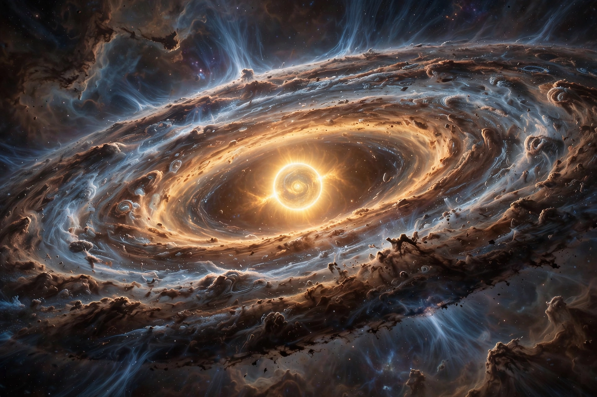

From Wikipedia, the free encyclopedia

The nebular hypothesis is the most widely accepted model in the field of cosmogony to explain the formation and evolution of the Solar System (as well as other planetary systems). It suggests the Solar System was formed from gas and dust orbiting the Sun, which originated from the material left over from the formation of the Sun itself.
The hypothesis was first proposed in 1734 by Emanuel Swedenborg and developed by Immanuel Kant in his Universal Natural History and Theory of the Heavens (1755). Pierre-Simon Laplace offered a similar account in 1796, in which a rotating, cooling nebula shed rings of material that condensed into planets. The Kant–Laplace model fell into disfavor in the early 20th century because it could not explain the distribution of angular momentum between the Sun and planets, but was revived in modified form from the 1970s as the solar nebular disk model.
In the current model, a cold molecular cloud core collapses under gravity (possibly triggered by a nearby supernova), forming a rotating protoplanetary disk around the newborn Sun. Dust grains settle and grow into planetesimals, which accrete into protoplanets. Within the snow line, rocky planets form; beyond it, icy cores grow massive enough to capture hydrogen and helium, forming gas giants. Observations of protoplanetary disks around young stars by telescopes such as ALMA support the model.